Keep fruits accessible. Keep a bowl on the table or your counter. Keep cut-up fruit in an easy-to-reach container in your refrigerator.
Make it easy! Have pre-cut fruits available at work. Make the healthy choice the easy choice.
For a flavor, color, or texture “kick,” add fruits to dishes such as mandarin oranges to a tossed salad or pineapple to a pizza.
Use fruit for your dessert choice. A juicy orange makes a great ending to a meal as does a baked apple during the winter.
For the original fast food, choose fruits as snacks. Apples and oranges travel well and can be eaten “on the run.” Dried fruit is another “on the go” fruit choice.
Looking to get your children to eat more fruit? Have them choose fruits at the grocery store. They can be involved in preparing them at home.
Make it fun! Cut up fruit and put it on a stick for fun and appealing fruit kabobs. A fruit smoothie is a fun and refreshing drink for adults and kids.
Top it off with fruit - use fruit as a topping for pancakes, waffles, cereal, or ice cream.
Try canned fruits in water or light juice. Also look for unsweetened frozen fruits.
Visit your local farmer’s market to get good buys. You might learn about some new fruits you haven’t tried!
 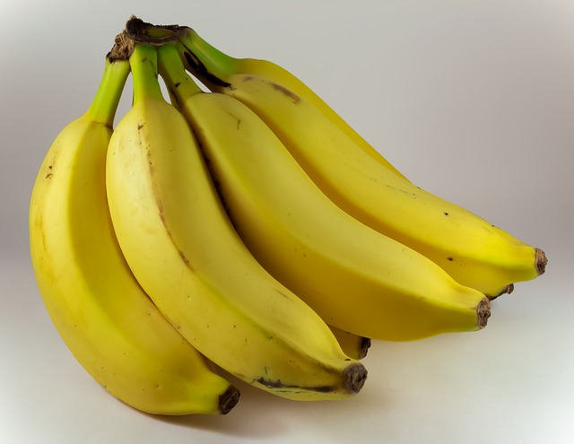
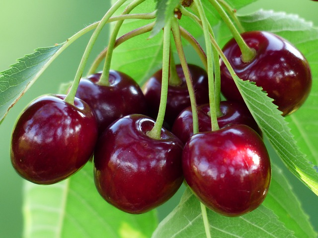
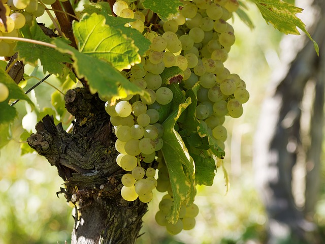
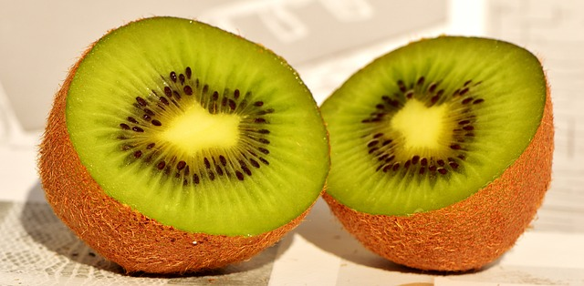
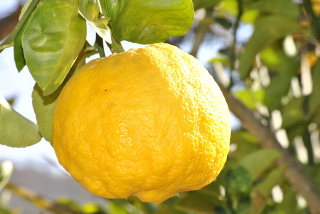
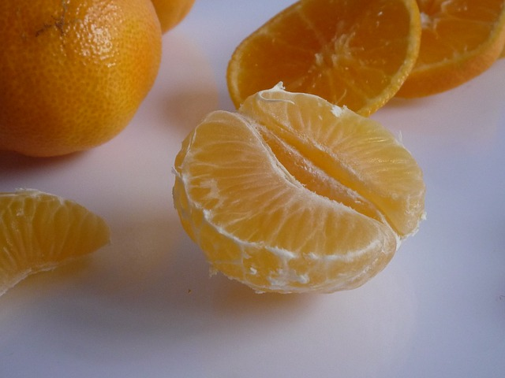
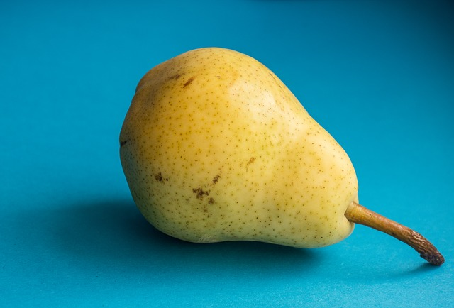
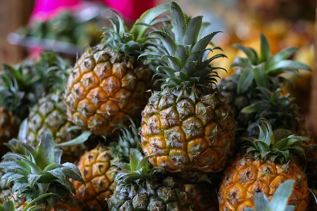
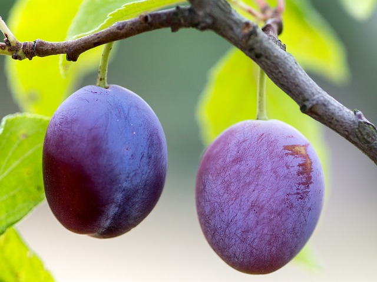
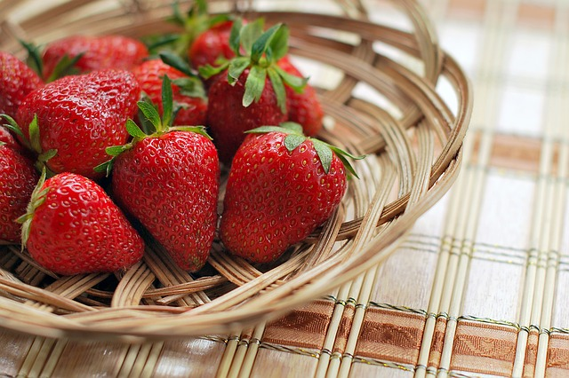
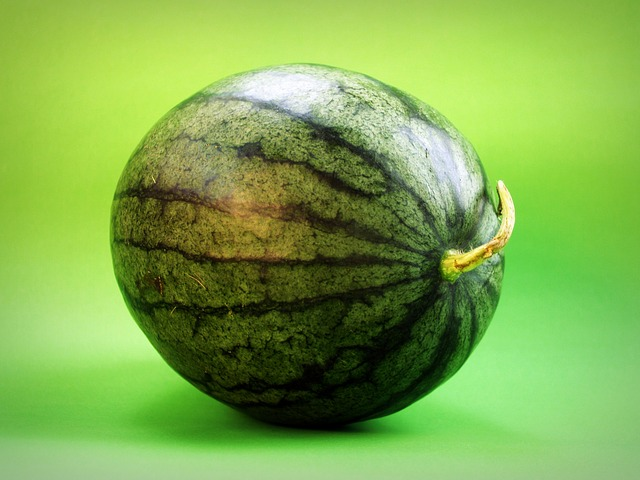
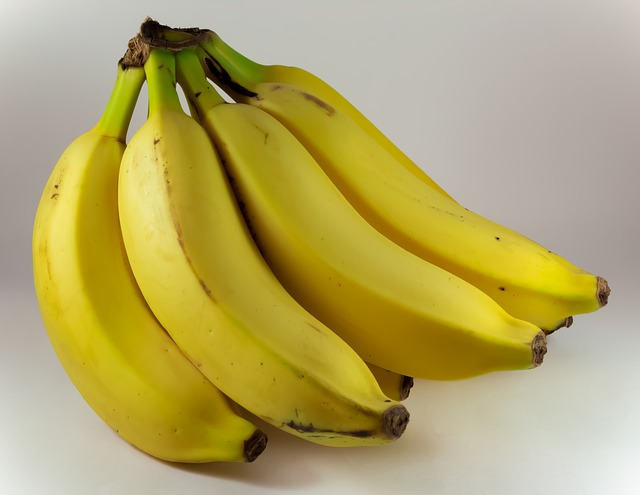
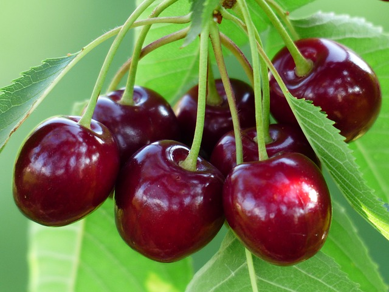
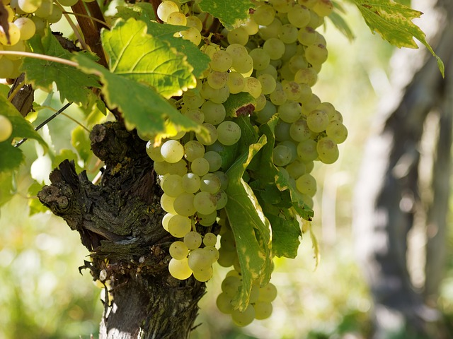
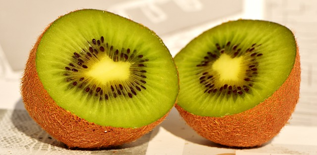
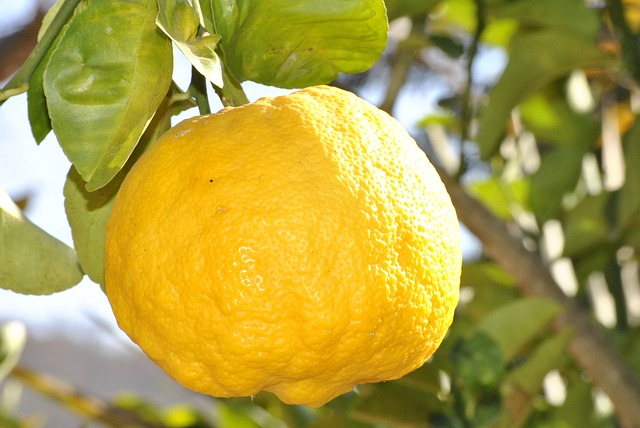
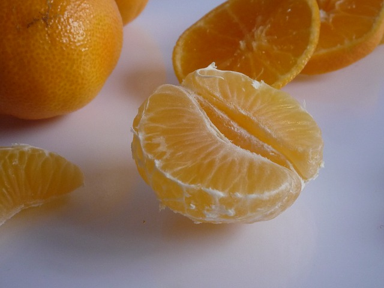
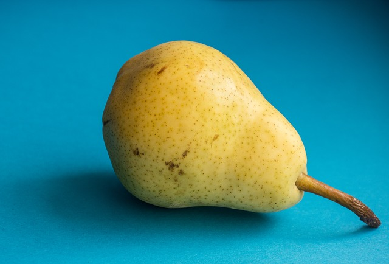
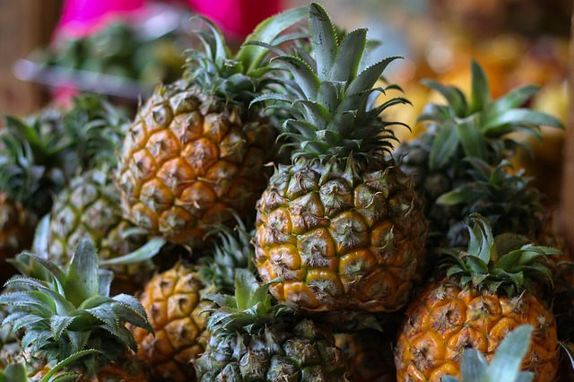
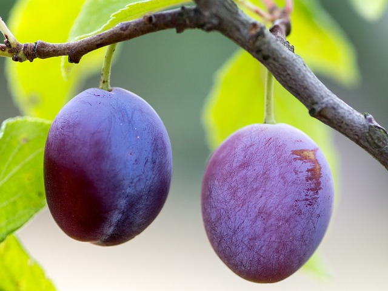
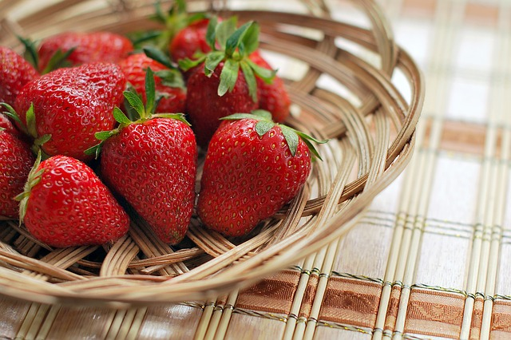
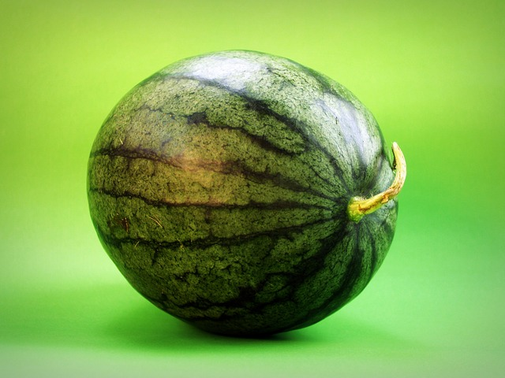